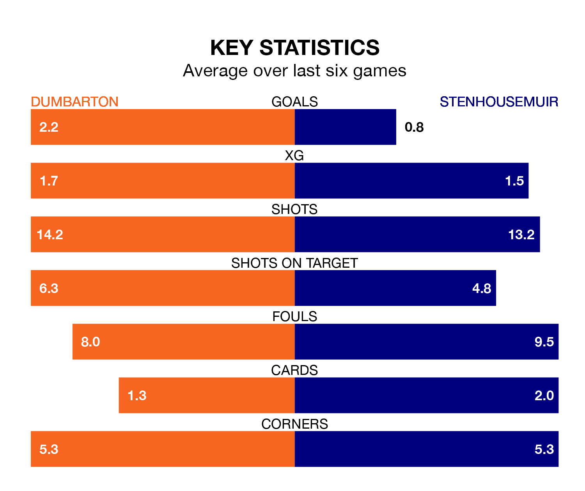

Two of League Two's top sides face each other at the moreroom.com Stadium in Saturday's kick-off, when third-placed Dumbarton host table-topping Stenhousemuir.
Dumbarton have picked up 14 wins and six draws from 30 games so far this season, and sit 15 points below the visitors going into the 3pm match.
The Warriors, meanwhile, have won 18 and drawn nine, picking up 63 points.
With 50 goals in 30 games so far this season, Dumbarton are the league's highest scorers with 1.7 goals per game. And they are conceding at an average rate, letting in 40 goals at a rate of 1.3 per game.
Stenhousemuir are also above average scorers, with 1.5 goals per game, compared to a league average of 1.3. They have conceded 0.8 goals per game.
In Darren Jamieson, the Warriors can rely on one of the league's safest pair of hands. He has kept 17 clean sheets in his 30 appearances this season, and no 'keeper has prevented the opposition scoring more often in League Two.
In the Sons's net, Brett Long has five clean sheets in 14 games.
In the last 10 years, Dumbarton and Stenhousemuir have played each other on 12 occasions. Dumbarton won four of them, Stenhousemuir six, and they drew twice.
On average, the Sons scored 1.4 goals and the Warriors 1.4 in those matches.
Their last meeting was on February 3, when Stenhousemuir won 1-0 at home.
The home team are in reasonable form in League Two, with four wins and two losses from their last six games.
With a win and four draws over that period, the visitors' form is worse – they have taken seven points from 18, compared to Dumbarton's 12.
Dumbarton's last match was on March 23, a 2-0 win against Bonnyrigg Rose Athletic, with Blair Malcolm and Tony Wallace getting the goals for the Sons.
Stenhousemuir drew 0-0 with Peterhead last time out, also on March 23.
Updated: 12:39 (UTC), 26/03/24